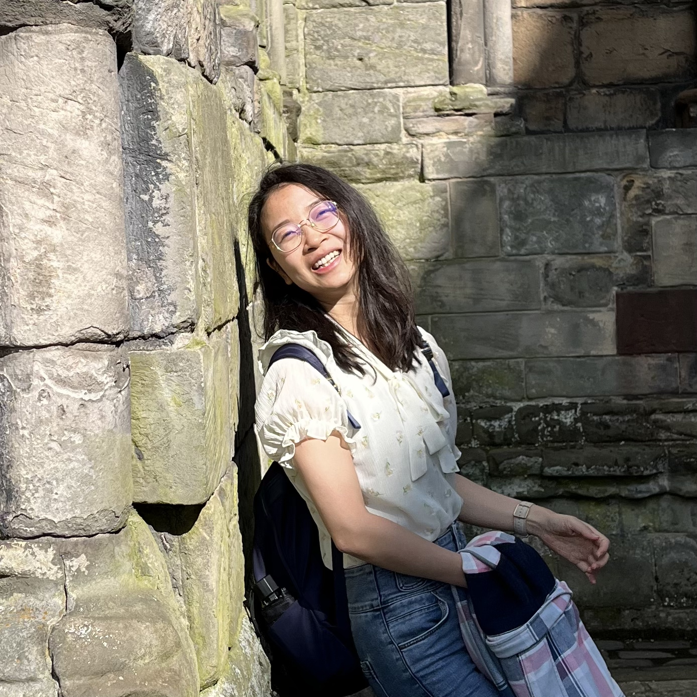

Qiuyu Lian
Understanding cell fate through AI, topology, and dynamical systems
Assistant Research Professor
Gurdon Institute & DAMTP
University of Cambridge
Email: ql333@cam.ac.uk
Google Scholar:
Profile
About Me
I am an Assistant Research Professor at the Gurdon Institute, University of Cambridge. My research focuses on understanding cell fate decisions and stem cell dynamics through the integration of AI, mathematics, and omics data analysis. I am particularly interested in how stem cell behaviours emerge across development, tissue homeostasis, regeneration, ageing, and tumourigenesis. My work develops and applies computational approaches, including machine learning, dynamical systems, and topology-inspired methods, to uncover the principles underlying cellular state transitions. I trained in engineering (BEng, Sichuan University) and bioinformatics (PhD, Tsinghua University).
Research
AI and Topological Modelling of Cell Fate Dynamics
My research aims to understand how cells make decisions over time, and how these processes are altered in disease.
- Neural ODEs and dynamical systems for modelling trajectories
- Topological data analysis, including persistent homology and circular coordinates
- Single-cell and spatial omics data
Long-term Vision
To build a predictive and mechanistic framework of cell fate, enabling identification of key regulators, understanding of disease progression, and discovery of therapeutic targets.